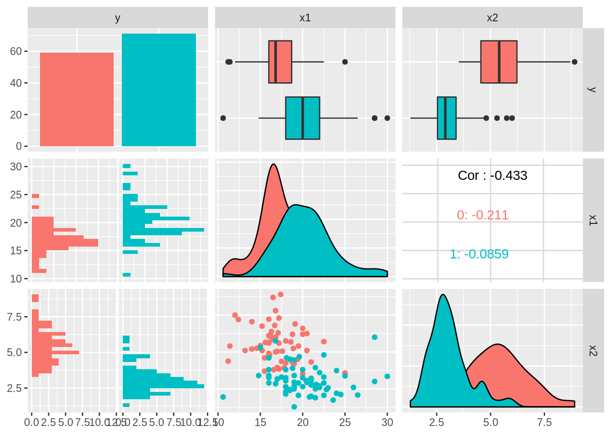

Compulsory Exercise 1
TMA4268 Statistical Learning V2018
Jørgen Riseth, Oliver Byhring and Håvard Bjørkøy
Problem 1 - Core concepts in statistical learning
a) Training and test MSE
###Figure 2 * The flexibility of the regression is high for K = 1, and gets smaller as K increases. For \(K = 1\) and \(K = 2\) the average of the different regressions at each point seems to fit the true curve well, but there is a lot of variance in the separate regression. For \(k = 10\) the amount of noise, the regressions have a tighter fit along the interval \([-2.2, 2.2]\) but the regression becomes flat at the endpoints. This is because the last 5 datapoint will share the same 10 closest points. This gets even more clear for \(K = 25\). This makes the regressions for high \(K\)-values biased at the end of our interval. There is also a biased trend farther from the endpoints. For negative curvature the KNN-regression predicts too low values, and for positive curvature the predictions become too high.
##Figure 3 * For all our training data sets, the MSE is zero for \(K = 1\), and increases as \(K\) increases. From the training data a regression model is created. When this model is used on our test sets, the MSE decreases for \(K\) from 1 till ~5, and then start to increase as it did with the training data.
- This shows the bias-variance tradeoff. For small \(K\) the regression model is overfitted to our training data, which gives increased variance for our test data. For large \(K\) the MSE increases as it becomes more biased. From these plots, the optimal value for \(K\) seems to be 4.
b) Bias-variance trade-off
First \(n=61\) error terms \(\epsilon_i\) for \(i = 0, 1,...,60\) are drawn from a normal distribution with mean 0 and variance 4. Then 61 equidistant \(x\)-values are chosen on the interval \([-3, 3]\). The true underlying curve is defined by \(f(x) = -1 + x^2 + x^3\), and we define the set of observations as \((x_i, y_i) = (x_i, f(x_i) + \epsilon_i)\). KNN-regression is used on these datapoints, to get a fitted curve \(\hat{f}_K\) for different values of \(K\). Performing this process \(M\) times, we canverage over the responses at every value \(x_i\), and can
Since we’re not in the real world and we know the underlying curve, we can now calculate the expected MSE: \(E[(Y-\hat{f}_k(x_i)^2]\) at all \(x_i\) values. This may be decomposed into three terms: The irreducible error, the variance of the prediction, and squared bias: \[ E[(Y-\hat{f}_k(x_i)^2] = \text{Var}(\epsilon) + \text{Var}[\hat{f}(x_i)] + [\text{Bias}(\hat{f}(x_i))]^2 \] The irreducible error is given by the variance of the error terms, i.e. \(\text{Var}(\epsilon) = 4\), The prediction variance is given by the MSE of the different observations relative to our estimated regression \(\hat{f}\), and the Bias is defined by \(f(x_i) - \hat{f}(x_i)\). Calculating and averaging these terms for all observations \(x_i\) for every \(K-value\), and plotting these as a function of \(K\), we get the plots in figure 4.
- For increasing model flexibility:
- The irreducible remains constant equal to 4.
- The variance decreases towards zero
- The bias increases
- The largest proportion of the total error is given by:
- The irreducible error for \(K = 1,..., 8\).
- The variance term for \(K>8\).
The lowest total error, and thus the optimal \(K\)-value, is given for \(K=3\). The error value is about the same value for \(K=4\) and \(5\), which matches our guess from a).
Problem 2 - Linear regression
library(ggplot2)
data = read.table("https://www.math.ntnu.no/emner/TMA4268/2018v/data/SYSBPreg3uid.txt")
dim(data)
colnames(data)
modelA=lm(-1/sqrt(SYSBP) ~ .,data = data)
summary(modelA)a) Understanding model output
The equation for the fitted model A is \(\frac{-1}{\sqrt{SYSBP}} = \beta_0 + \beta_1 SEX + \beta_2 AGE + \beta_3 CURSMOKE + \beta_4 BMI + \beta_5 TOTCHOL + \beta_6 BPMEDS + \epsilon\), so our model fits this linear relation best. When measuring, we will have errors, \(\epsilon\) which our parameters will try to minimize.
The estimates are the estimates for each coefficient \(\beta_i\) that best fits our model. The intercept is our \(\beta_0\), i.e. our model prediction if all covariates were zero, our line intercept of systolic blood pressure in the seven dimensional relation. The Std. Error is the standard error of the parameter estimated on our data set, i.e. a measurement of variability in the relation between \(\frac{-1}{\sqrt{SYSBP}}\) and the covariate we’re evaluating. A better measurement of the slope in each covariates direction if the t-value, which reveals how many standard errors our estimate is from zero, i.e. esimate divided by standard error. A large t-value indicates that the nullhypothesis seems to be false, and this is also shown in the value of each Pr(>|t|), which explains the probability that the true coefficient differ from our estimator more than the (absolute) t-value, by equation \(t = \frac{\hat{\beta_i} - \beta}{\hat{\sigma}}\), where \(\hat{\sigma}\) is the standard error as described. Then we see that the t-value is the quantile for which we reach \(\beta = 0\) in the t-distribution. The p-value is our confidence in the nullhypothesis.
The residual standard error is sort of an unbiased quality control of our error terms in the model. The RSE is the RSS divided by the degrees of freedom. The F-statistic is a tool for deciding wether to reject the nullhypothesis, and will tell us if the regression is significant. The upper tail of the F-distribution gives the p-value, and we can reject the nullhypothesis if this p-value is greater than some critical value ( i.e. 0.01).
b) Model fit
The entire code for our solution of b) of given below, where we perform the same type of analysis on model A as on model B.
library(ggplot2)## Registered S3 methods overwritten by 'ggplot2':
## method from
## [.quosures rlang
## c.quosures rlang
## print.quosures rlangdata = read.table("https://www.math.ntnu.no/emner/TMA4268/2018v/data/SYSBPreg3uid.txt")
dim(data)## [1] 2600 7colnames(data)## [1] "SYSBP" "SEX" "AGE" "CURSMOKE" "BMI" "TOTCHOL"
## [7] "BPMEDS"modelA=lm(-1/sqrt(SYSBP) ~ .,data = data)
summary(modelA)##
## Call:
## lm(formula = -1/sqrt(SYSBP) ~ ., data = data)
##
## Residuals:
## Min 1Q Median 3Q Max
## -0.0207366 -0.0039157 -0.0000304 0.0038293 0.0189747
##
## Coefficients:
## Estimate Std. Error t value Pr(>|t|)
## (Intercept) -1.103e-01 1.383e-03 -79.745 < 2e-16 ***
## SEX -2.989e-04 2.390e-04 -1.251 0.211176
## AGE 2.378e-04 1.434e-05 16.586 < 2e-16 ***
## CURSMOKE -2.504e-04 2.527e-04 -0.991 0.321723
## BMI 3.087e-04 2.955e-05 10.447 < 2e-16 ***
## TOTCHOL 9.288e-06 2.602e-06 3.569 0.000365 ***
## BPMEDS 5.469e-03 3.265e-04 16.748 < 2e-16 ***
## ---
## Signif. codes: 0 '***' 0.001 '**' 0.01 '*' 0.05 '.' 0.1 ' ' 1
##
## Residual standard error: 0.005819 on 2593 degrees of freedom
## Multiple R-squared: 0.2494, Adjusted R-squared: 0.2476
## F-statistic: 143.6 on 6 and 2593 DF, p-value: < 2.2e-16ggplot(modelA, aes(.fitted, .resid)) + geom_point(pch = 21) +
geom_hline(yintercept = 0, linetype = "dashed") +
geom_smooth(se = FALSE, col = "red", size = 0.5, method = "loess") +
labs(x = "Fitted values", y = "Residuals", title = "Fitted values vs. residuals", subtitle = deparse(modelA$call))# qq-plot of residuals
ggplot(modelA, aes(sample = .stdresid)) +
stat_qq(pch = 19) +
geom_abline(intercept = 0, slope = 1, linetype = "dotted") +
labs(x = "Theoretical quantiles", y = "Standardized residuals", title = "Normal Q-Q", subtitle = deparse(modelA$call))# normality test
library(nortest)
ad.test(rstudent(modelA))##
## Anderson-Darling normality test
##
## data: rstudent(modelA)
## A = 0.19209, p-value = 0.8959modelB=lm(SYSBP ~ .,data = data)
summary(modelB)##
## Call:
## lm(formula = SYSBP ~ ., data = data)
##
## Residuals:
## Min 1Q Median 3Q Max
## -59.800 -13.471 -1.982 11.063 88.959
##
## Coefficients:
## Estimate Std. Error t value Pr(>|t|)
## (Intercept) 56.505170 4.668798 12.103 < 2e-16 ***
## SEX -0.429973 0.807048 -0.533 0.59424
## AGE 0.795810 0.048413 16.438 < 2e-16 ***
## CURSMOKE -0.518742 0.853190 -0.608 0.54324
## BMI 1.010550 0.099770 10.129 < 2e-16 ***
## TOTCHOL 0.028786 0.008787 3.276 0.00107 **
## BPMEDS 19.203706 1.102547 17.418 < 2e-16 ***
## ---
## Signif. codes: 0 '***' 0.001 '**' 0.01 '*' 0.05 '.' 0.1 ' ' 1
##
## Residual standard error: 19.65 on 2593 degrees of freedom
## Multiple R-squared: 0.2508, Adjusted R-squared: 0.249
## F-statistic: 144.6 on 6 and 2593 DF, p-value: < 2.2e-16ggplot(modelB, aes(.fitted, .resid)) + geom_point(pch = 21) +
geom_hline(yintercept = 0, linetype = "dashed") +
geom_smooth(se = FALSE, col = "red", size = 0.5, method = "loess") +
labs(x = "Fitted values", y = "Residuals", title = "Fitted values vs. residuals", subtitle = deparse(modelA$call))
# qq-plot of residuals
ggplot(modelB, aes(sample = .stdresid)) +
stat_qq(pch = 19) +
geom_abline(intercept = 0, slope = 1, linetype = "dotted") +
labs(x = "Theoretical quantiles", y = "Standardized residuals", title = "Normal Q-Q", subtitle = deparse(modelA$call))ad.test(rstudent(modelB))##
## Anderson-Darling normality test
##
## data: rstudent(modelB)
## A = 13.2, p-value < 2.2e-16The porportion of variability explained by the model is 24.9 %, which is the R-squared value. This implies that a lot of the variance is coming from elsewhere, but we might nontheless accept our model, since it gives a simple relationship. Unexplainable variance is to be expected.
From the plots of model A we see that the residuals are very small, and the QQ-plot shows that the error terms are normally distributed. Both qualities are desirable, and indicates that the model is nice.
Model B explains the variability of the data almost the exact same as model A, but the two plots reveals that model A is way better. The residuals of B are far greater than those of A, and they don’t seem to be normally distributed at all. Only A pass the Anderson-Darling normality test, and fail to reject that the data is sampled from a normal distribution.
c) Confidence interval and hypothesis test
The estimator of the relation between BMI and SYSBP in our model is \(\hat{\beta}_{BMI} = 3.087 \cdot 10^{-4}\). Here our response is shaped as \(\frac{-1}{\sqrt{SYSBP}}\), and therefore an increase in BMI wil actually lower the SYSBP generally in our model. Though this seems counterintuitive, it might be right for this model since we have several covariates.
To construct a 99% confidence interval we need to use the t-distribution as explained, though the degrees of freedom is so large in this study (2593), so it will suffice to choose the right quantile from the normal distribution = upper and lower 0.5%. \(z_{0.005} = 2.576\), so our interval will be covered by \(\hat{\beta}_{BMI} \pm z_{0.005} \hat{\sigma}\), which gives \(\beta_{BMI} \in (2.33 \cdot 10^{-4}, 3.85 \cdot 10^{-4})\). The interval tells us that repeating the experiment with the same amount of observations will with 99% confidence reproduce an estimator within this interval.
In R we can do it as follows
confint(modelA, "BMI", level = 0.99)## 0.5 % 99.5 %
## BMI 0.0002325459 0.0003848866From this interval, the p-value is definately smaller than 1%, i.e. we have less than 1% confidence that there is zero relation between BMI and the systolic blood pressure. In fact, the p-value is extremely small as we can read off the table. The p-value simply says something about rejecting the nullhypothesis.
d) Prediction
Considering the person described we use our estimators from model A in the equation from a). The best guess uses the estimators, and the value is \(\frac{-1}{\sqrt{SYSBP}} = -0.08667\), hence we guess his systolic blood pressure to be 133.12.
We can use R to easily find a prediction interval for the persons SYSBP
names(data)## [1] "SYSBP" "SEX" "AGE" "CURSMOKE" "BMI" "TOTCHOL"
## [7] "BPMEDS"new=data.frame(SEX=1,AGE=56,CURSMOKE=1,BMI=89/1.75^2,TOTCHOL=200,BPMEDS=0)
pred = predict(modelA,newdata = new, interval = "predict", level = 0.90)
pred## fit lwr upr
## 1 -0.08667246 -0.09625664 -0.07708829sysbPred = (-pred)^-2
sysbPred## fit lwr upr
## 1 133.1183 107.9291 168.2764After transforming the interval in the last lines we get the values (107.93, 168.28). We have 90% confidence in that the persons SYSBP is within these values, given that the person is drawn from the same population. This interval is rather large, and does not give any useful information about wether the persons blood pressure might be either normal, larger than or smaller than normal.
Problem 3 - Classification
For this tasks we will perform some classification schemes on a dataset consisting of two types of wine. We wish to show that:
\[\text{logit}(p_i) = \text{log}(\frac{p_i}{1-p_i})\]
This can be written as: \[ \text{log}(p_i)-\text{log}(1-p_i).\] We know that \(p_i\) is:
\[ p_i(Y_i=1|\bf{X}=x_i) = \frac{e^{\beta_0+\beta_1x_1+\beta_2x_2}}{1+e^{\beta_0+\beta_1x_1+\beta_2x_2}}.\]
For simplicity we choose \(\beta_0+\beta_1x_1+\beta_2x_2\) to be \(\alpha\). We insert \(p_i\) into the equation and get:
\[ \text{log}\bigg(\frac{e^{\alpha}}{1+e^{\alpha}}\bigg)-\text{log}\bigg(1-\frac{e^{\alpha}}{1+e^{\alpha}}\bigg) = \text{log}\bigg(\frac{e^{\alpha}}{1+e^{\alpha}}\bigg) - \text{log}\bigg(\frac{1}{1+e^{\alpha}}\bigg) = \text{log}(e^{\alpha})=\alpha\]
Thus \(\text{logit}(p_i)\) is linear.
library(ggplot2)
library(GGally)
library(class)
library(MASS)
library(pROC)
wine=read.csv("https://www.math.ntnu.no/emner/TMA4268/2018v/data/Comp1Wine.csv",sep=" ")
wine$class=as.factor(wine$class-1)
colnames(wine)=c("y","x1","x2")
ggpairs(wine, ggplot2::aes(color=y))
# Divide data into test-, and training set
n = dim(wine)[1]
set.seed(4268) #to get the same order if you rerun - but you change this to your favorite number
ord = sample(1:n) #shuffle
test = wine[ord[1:(n/2)],]
train = wine[ord[((n/2)+1):n],]##a) Logistic Regression
# Some functions for calculating
# Linear relation
log.eta <- function(dataset, fit.model)
{
beta = unlist(fit.model$coefficients)
X = c(1, unlist(dataset[ c('x1', 'x2')] ) )
return( X %*% beta)
}
# Posterior probability
log.prob <- function(dataset, fit.model)
{
e = log.eta(dataset, fit.model)
return( exp(e)/(1 + exp(e)) )
}
# Find intercept and slope of decision bound
log.decision_bound <- function(dataset, fit.model)
{
beta = as.matrix(fit.model$coefficients)
intercept = -beta[1]/beta[3]
slope = -beta[2]/beta[3]
v = c(intercept, slope)
names(v) = c("Intercept", "Slope")
return( v )
}
# Error rate, sensitivity, specificity
error_rate <- function(confusion){1 - sum(diag(confusion))/(sum(confusion))}
sensitivity <- function(confusion){confusion['1','1']/sum(confusion[,'1'])}
specificity <- function(confusion){confusion['0','0']/sum(confusion[,'0'])}
rates <- function(confusion)
{
rates <- c(error_rate(confusion), specificity(confusion), sensitivity(confusion))
names(rates) <- c("Error rates", "Specificity", "Sensitivity")
return(rates)
}
# Create fit model.
log.fit = glm(y ~ x1 + x2, family = "binomial", data = train)
summary(log.fit)##
## Call:
## glm(formula = y ~ x1 + x2, family = "binomial", data = train)
##
## Deviance Residuals:
## Min 1Q Median 3Q Max
## -1.54026 -0.22362 0.04062 0.17637 2.61890
##
## Coefficients:
## Estimate Std. Error z value Pr(>|z|)
## (Intercept) 0.6772 2.9794 0.227 0.820201
## x1 0.4889 0.1872 2.612 0.008993 **
## x2 -2.1524 0.5781 -3.723 0.000197 ***
## ---
## Signif. codes: 0 '***' 0.001 '**' 0.01 '*' 0.05 '.' 0.1 ' ' 1
##
## (Dispersion parameter for binomial family taken to be 1)
##
## Null deviance: 89.354 on 64 degrees of freedom
## Residual deviance: 27.762 on 62 degrees of freedom
## AIC: 33.762
##
## Number of Fisher Scoring iterations: 7# Evaluation training set.
train.prob = predict(log.fit, type = "response")
train.pred = ifelse(train.prob > 0.5, 1, 0)
train.conf = table(train$y, train.pred)
# Evaluation test set
log.test.prob = predict(log.fit, newdata = test, type = "response")
log.test.pred = ifelse(log.test.prob > 0.5, 1, 0)
log.test.conf = table(test$y, log.test.pred)
# Calculate decision boundary.
log.bound = log.decision_bound(train, log.fit)
# Plot datapoints, and decision boundary.
g1 = ggplot( data = train, aes(x = x1, y = x2, colour=y) ) + geom_point(pch = 1)
g1 + geom_point( data = test, pch = 3 ) + geom_abline( slope=log.bound['Slope'], intercept = log.bound['Intercept']) + ggtitle("Train and test and logistic boundary")# Calculate estimated posterior probability in given point.
log.prob(list(x1 = 17, x2 = 3), log.fit)## [,1]
## [1,] 0.9263574train.conf## train.pred
## 0 1
## 0 25 4
## 1 3 33rates(train.conf)## Error rates Specificity Sensitivity
## 0.1076923 0.8928571 0.8918919log.test.conf## log.test.pred
## 0 1
## 0 21 9
## 1 1 34rates(log.test.conf)## Error rates Specificity Sensitivity
## 0.1538462 0.9545455 0.7906977\(\beta_1\) and \(\beta_2\) represent the change in log-odds ascociated with one unit increase in \(x_1\) and \(x_2\) respectivly. Or equivalently it multiplies the odds by \(e^{\beta_1}\) and \(e^{\beta_2}\) with one unit increase in \(x_1\) and \(x_2\) respectivly. Since the relationships between \(p(x_1,x_2)\) and \((x_1,x_2)\) is not a straight line, \(\beta_{1}\) and \(\beta_2\) does not correspond to the change in \(p(x_1,x_2)\).
The class boundry is given by the line:
\[x_2 = \frac{-\beta_0-\beta_1x_1}{\beta_2}\] This is a linear boundry. If a point is over this line it is classified as class 0 and class 1 if the point is under.
We can read off \(\beta_0,\beta_1\) and \(\beta_2\) from the summary function for fit. Then insert all the values into
\[\hat{Pr}_i(Y=1|x_1=17,x_2=3) = \frac{e^{\beta_0+\beta_1x_1+\beta_2x_2}}{1+e^{\beta_0+\beta_1x_1+\beta_2x_2}}.\]
This yields \(\hat{Pr}_i(Y=1|x_1=17,x_2=3) = 0.9289.\) A wine with alchalinity 17 and color 3 has a high probability of being class 1.
The sensitivity is the proportion of correctly classified positive observations and specificity is the proportion of correctly classified negative observations. Our classifier had a sensetivity of 85.7% and a specificity of 83.3 % which is satisfactory.
##b) KNN-classifier In this task we predict the classes of the test set observations, using a KNN classifier for \(K = 3\) and \(K = 9\) points. To perform this, we use the following estimation for the posterior probability:
\[ P(Y=j|X=x_0) = \frac{1}{K}\sum_{i\in \mathcal{N_0}}I(y_i=j). \]
This expression estimates the posterior probability that a new datapoint \(x_0\) is coming from class \(j\), by searching the training set for the \(K\) datapoints that is closest to \(x_0\) in euclidian distance, and calculating the amount of these which comes from class \(j\). Define \(r_K := ||x_{(K)}-x_0||_2\), where \(x_{(K)}\) is the \(K\)-th closest point to \(x_0\). If there are multiple points at the same distance, let \(x_{(K)}\) be the lowest indexed observation amongst these. Then \(\mathcal{N_0} = \{y\in\mathbb{R}^2: ||y-x_0||<r_k\}\cup\{x_{(K)}\}\) describes the open disk around \(x_0\) which contains the \(K-1\) closest points, and the \(K\)-th closest point. \(I(y_i=1)\) is an indicator random variable, that equals 1 if the class of an observation in the neighbourhood \(\mathcal{N_0}\) is 1, and 0 otherwise. In other words, this expression counts the number of class \(j\) observations among the \(K\) closest points in the training set around \(x_0\), and divides by the number of points \(K\).
Using the expression above to estimate the posterior probabilities of the test data points, the KNN function the classifies a given datapoint to the class which has the highest probability. Since the wine data set only contains two classes, a point is classified as class 1 if the probability exceeds 0.5.
In this code snippet, KNN classification is used on our dataset for \(K=3\) and \(K=9\):
# Order data for KNN-function
KNN.train = as.matrix(train[c('x1', 'x2')])
KNN.test = as.matrix(test[c('x1', 'x2')])
# Perform KNN classifier for different K-values
KNN3 = knn(train = KNN.train, test = KNN.test, cl = train$y, k = 3, prob = T)
KNN9 = knn(train = KNN.train, test = KNN.test, cl = train$y, k = 9, prob = T)
# Set up confusion matrices
KNN3.conf = table(KNN3, test$y)
KNN9.conf = table(KNN9, test$y)
KNN3.conf##
## KNN3 0 1
## 0 21 3
## 1 9 32rates(KNN3.conf)## Error rates Specificity Sensitivity
## 0.1846154 0.7000000 0.9142857KNN9.conf##
## KNN9 0 1
## 0 23 5
## 1 7 30rates(KNN9.conf)## Error rates Specificity Sensitivity
## 0.1846154 0.7666667 0.8571429From the results, we can see that KNN for \(K = 3\) performs better than with \(K=9\). If we had chosen K-values lower then 3 we would get a lower sensitivity and specificity. This is another example of the bias-variance tradeoff. Choosing \(K\) too low will result in overfitting, while, choosing \(K\) too high will result in a biased classifier that does not account for small trends in the dataset.
c) LDA classifier
\(\pi_k\) is the prior probability, that is the probability that a random chosen variable \(\mathbf{X}\) is in class \(k\).
where N is the total number of variables. \(\mathbf{\mu}_k\) is the mean vector of class \(k\).
\[ \mathbf{\mu}_k = \left(\begin{array}{cc} E(x_1) \\ E(x_2) \end{array}\right)\]
\(\mathbf{\Sigma}\) is the symmetric covariance matrix. It is not class specific.
\[ \boldsymbol{\Sigma} = \left(\begin{array}{cc} \sigma_1^2 & \sigma_{12} \\ \sigma_{12} & \sigma_2^2 \end{array}\right) \] Where \(\sigma_i\) is the standard diviation in \(x_i\) and \(\sigma_{12}\) is the covariance between \(x_1\) and \(x_2\), \(\text{Cov}(x_1,x_2)\).
\(f_k(x)\) is the density function of \(X\) for an observation that comes from class k.
We can estimate \(\hat\pi\), \(\hat\mu\) and \(\hat\Sigma\) like this:
\[ \hat\pi_k = \frac{n_k}{N}\]
\[\mathbf{\hat\mu}_k = \frac{1}{n_k}\sum_{i:y_i\neq k}x_i\]
\[\hat{\boldsymbol{\Sigma}}_k=\frac{1}{n_k-1}\sum_{i:y_i=k} ({\bf X}_i-\hat{\boldsymbol{\mu}}_k ) ({\bf X}_i-\hat{\boldsymbol{\mu}}_k)^T\]
\[\mathbf{\hat\Sigma} = \sum_{k=1}^{K}\frac{n_k-1}{n-K}\mathbf{\hat\Sigma_k}\]
\(\pi_k\) is the prior probability, that is the probability that a random chosen variable is in class \(k\).
where N is the total number of variables. \(\mathbf{\mu}_k\) is the mean vector of class \(k\).
\[ \mathbf{\mu}_k = \left(\begin{array}{cc} E(x_1) \\ E(x_2) \end{array}\right)\]
\(\mathbf{\Sigma}\) is the symmetric covariance matrix. It is not class specific.
\[ \boldsymbol{\Sigma} = \left(\begin{array}{cc} \sigma_1^2 & \sigma_{12} \\ \sigma_{12} & \sigma_2^2 \end{array}\right) \] Where \(\sigma_i\) is the standard diviation in \(x_i\) and \(\sigma_{12}\) is the covariance between \(x_1\) and \(x_2\), \(\text{Cov}(x_1,x_2)\).
\(f_k(x)\) is the density function of \(X\) for an observation that comes from class k.
We can estimate \(\hat\pi\), \(\hat\mu\) and \(\hat\Sigma\) like this:
\[ \hat\pi_k = \frac{n_k}{N}\] \[\mathbf{\hat\mu}_k = \frac{1}{n_k}\sum_{i:y_i\neq k}x_i\] \[\hat{\boldsymbol{\Sigma}}_k=\frac{1}{n_k-1}\sum_{i:y_i=k} ({\bf X}_i-\hat{\boldsymbol{\mu}}_k ) ({\bf X}_i-\hat{\boldsymbol{\mu}}_k)^T\] \[\mathbf{\hat\Sigma} = \sum_{k=1}^{K}\frac{n_k-1}{n-K}\mathbf{\hat\Sigma_k}\] \[\begin{align} Pr(Y=0|\mathbf{X}=\mathbf{x}) &= Pr(Y=1|\mathbf{X}=\mathbf{x}) \\ \frac{\pi_0e^{-\frac{1}{2}(x-\mathbf{\mu_0})^T\mathbf{\Sigma}^{-1}(x-\mathbf{\mu_0})}}{(2\pi)\lvert\mathbf\Sigma \rvert^{\frac{1}{2}}(\pi_0f_0(x)+\pi_1f_1(x))} &= \frac{\pi_1e^{-\frac{1}{2}(x-\mathbf{\mu_1})^T\mathbf{\Sigma}^{-1}(x-\mathbf{\mu_1})}}{(2\pi)\lvert\mathbf\Sigma \rvert^{\frac{1}{2}}(\pi_0f_0(x)+\pi_1f_1(x))} \\ \text{log}(\pi_0)-\frac{1}{2}(x-\mathbf{\mu_0})^T\mathbf{\Sigma}^{-1}(x-\mathbf{\mu_0}) &=\\ \text{log}(\pi_1)-\frac{1}{2}(x-\mathbf{\mu_1})^T\mathbf{\Sigma}^{-1}(x-\mathbf{\mu_1}) \\ \text{log}(\pi_0)-\frac{1}{2}(x-\mathbf{\mu_0})^T(\mathbf{\Sigma}^{-1}x-\mathbf{\Sigma}^{-1}\mathbf{\mu_0}) &=\\ \text{log}(\pi_1)-\frac{1}{2}(x-\mathbf{\mu_1})^T(\mathbf{\Sigma}^{-1}x-\mathbf{\Sigma}^{-1}\mathbf{\mu_1}) \\ \text{log}(\pi_0)-\frac{1}{2}(x^T\mathbf{\Sigma}^{-1}x-x^T\mathbf{\Sigma}^{-1}\mathbf{\mu}_0-\mathbf{\mu}_0^T\mathbf{\Sigma}^{-1}x+\mathbf{\mu}_0^T\mathbf{\Sigma}^{-1}\mathbf{\mu}_0) &= \\ \text{Log}(\pi_1)-\frac{1}{2}(x^T\mathbf{\Sigma}^{-1}x-x^T\mathbf{\Sigma}^{-1}\mathbf{\mu}_1-\mathbf{\mu}_1^T\mathbf{\Sigma}^{-1}x+\mathbf{\mu}_1^T\mathbf{\Sigma}^{-1}\mathbf{\mu}_1) \\ \text{Log}(\pi_0)-\frac{1}{2}(-x^T\mathbf{\Sigma}^{-1}\mathbf{\mu}_0-\mathbf{\mu}_0^T\mathbf{\Sigma}^{-1}x+\mathbf{\mu}_0^T\mathbf{\Sigma}^{-1}\mathbf{\mu}_0) &=\\ \text{Log}(\pi_1)-\frac{1}{2}(-x^T\mathbf{\Sigma}^{-1}\mathbf{\mu}_1-\mathbf{\mu}_1^T\mathbf{\Sigma}^{-1}x+\mathbf{\mu}_1^T\mathbf{\Sigma}^{-1}\mathbf{\mu}_1) \\ x^T\mathbf{\Sigma}^{-1}\mathbf{\mu}_0 &=\mathbf{\mu}_0^T\mathbf{\Sigma}^{-1}x \\ \text{Log}(\pi_0)+x^T\mathbf{\Sigma}^{-1}\mathbf{\mu}_0-\frac{1}{2}\mathbf{\mu}_0^T\mathbf{\Sigma}^{-1}\mathbf{\mu}_0 &= \text{Log}(\pi_1)+x^T\mathbf{\Sigma}^{-1}\mathbf{\mu}_1-\frac{1}{2}\mathbf{\mu}_1^T\mathbf{\Sigma}^{-1}\mathbf{\mu}_1 \\ \delta_0 &= \delta_1 \end{align}\]
By setting the discriminant functions for the two classes equal to each other, we may find an explicit expression for the decision boundary: \[ x_2 = -\frac{A_1}{A_2}x_1 + (b_1-b_0) + \text{log}\bigg(\frac{\pi_1}{\pi_0}\bigg) \] where \(A_i\) is the \(i\)-th entry of \(A = \Sigma^{-1}(\mu_0 - \mu_k)\) and \(b_k=-\frac{1}{2}\mu_k^T\Sigma^{-1}\mu_k\).
# Function to calculate slope and intercept of decision boundary
lda.decision_bound <- function(dataset, lda.fit, bound_value = 0.5)
{
class1 = dataset$y == 1
X = dataset[c('x1', 'x2')]
n0 = nrow(X[!class1,])
n1 = nrow(X[class1,])
mu = lda.fit$means
S0 = cov(X[!class1,])
S1 = cov(X[class1,])
S = 1/(n0 + n1 - 2) * ((n0-1) * S0 + (n1-1) * S1)
S.inv = solve(S)
A = S.inv %*% (mu['0',] - mu['1',])
b0 = -1/2 * (t(mu['0',]) %*% S.inv %*% mu['0',])
b1 = -1/2 * (t(mu['1',]) %*% S.inv %*% mu['1',])
intercept = ( b1 - b0 + log(lda.fit$prior['1']/lda.fit$prior['0']) ) / A[2]
slope = -A[1]/A[2]
v = c(intercept, slope)
names(v) = c("Intercept", "Slope")
return(v)
}
# Fit lda-model
wine.lda = lda(y ~ x1 + x2, data = train)
lda.test.pred = predict(wine.lda, newdata = test)
lda.test.conf = table(test$y, lda.test.pred$class)
# Find slope and intercept of decision boundary.
lda.bound = lda.decision_bound(train, wine.lda)
# Plot datapoints, and decision boundary.
g2 = ggplot( data = train, aes(x = x1, y = x2, colour=y) ) + geom_point(pch = 1)
g2 + geom_point( data = test, pch = 3 ) + geom_abline( slope=lda.bound['Slope'], intercept = lda.bound['Intercept']) + ggtitle("Training- and test data, and LDA-boundary")lda.test.conf##
## 0 1
## 0 21 9
## 1 1 34rates(lda.test.conf) # Confusion matrix test data## Error rates Specificity Sensitivity
## 0.1538462 0.9545455 0.7906977When performing LDA on our data, we assume that the different classes has the same covariance matrix which is estimated as given above. If we were to assume two different covariance-matrices for each of the classes the results would differ. This will have some consequences for our classifier. Since the covariance matrices are different for different classes, the discrimant function becomes
\[ \delta_k(x) = -\frac{1}{2} x^T \boldsymbol{\Sigma}_k^{-1}x + x^T \boldsymbol{\Sigma}_k^{-1}\mu_k - \frac{1}{2} \mu_k^T \boldsymbol{\Sigma}_k^{-1}\mu_k - \frac{1}{2}\log |\boldsymbol{\Sigma}_k | + \log \pi_k. \] this discriminant function is quadratic in \(x\). If we were to draw the QDA decisison boundary in our plot, it would be curved as a parabola, rather than linear as the LDA decision boundary.
##d) Classifier Comparison & ROC In the previous tasks we’ve used Logsitic regression, KNN and LDA methods to estimate the probability of a given datapoint coming from a given class, and classified the point to the class which has the highest probability. Since we just have two classes, a point is classified as class 1 if our estimate of \(\text{P}(Y=|x=x_o) < 0.5\). Their performance on our test set is as follows:
rates(log.test.conf) # Logistic regression## Error rates Specificity Sensitivity
## 0.1538462 0.9545455 0.7906977rates(KNN3.conf) # KNN with K =3## Error rates Specificity Sensitivity
## 0.1846154 0.7000000 0.9142857rates(lda.test.conf) # LDA## Error rates Specificity Sensitivity
## 0.1538462 0.9545455 0.7906977From these numbers, our KNN classifier performs best overall, whilst our LDA classifier comes out last. The KNN classifier makes no assumptions about the shape of our decision boundary. Since both logistic regression and LDA assumes a linear decision boundary, its probable that we should use a more flexible classifier. The LDA classifier makes the assumprtion that the two classes are normally distributed with the same covariance matrix. By looking at the gpairs plot at the start of this task, it seems the assumption of normally distributed predictors holds up okay at best, but the standard deviation of the predictors is different in both \(x_1\) and \(x_2\). A QDA would probably make a better prediciton for this data.
Since both the LDA and logistic regression calssifiers assumes a linear decision boundary, these classifiers often performs similar. The coefficients of the boundaries are given by:
log.bound## Intercept Slope
## 0.3146150 0.2271624lda.bound## Intercept Slope
## 0.8104984 0.2008623The LDA-boundary has a slightly higher intercept, and a bit steeper slope than the logistic regression boundary. This seems like another indicator that the assumptions of the lda classifier does not hold as expected.
Previously all the classifiers have been tested only for a 0.5 cut-off probability. If a misclassification of one of the classes may have large consequences, we may want to adjust the treshold probabilities, which may change both the sensitivity and specificity of the classifiers. The overall performance of a classifier should also take account of this, as an increase in specificity usually leads to a decrease in sensitivity & vice versa. An ROC curve displays this relation by plotting specificity on the x-axis against the sensitivity on the y-axis. Ideally this curve should hug the upper left corner, which indicates a low false positive rate and a high true positive rate (here \(-/+\) is defined by \(0/1\)). Thus we want our classifier to have as large an area under the curve as possible, and the overall performance of a classifier may be evaluated by the “Area Under the Curve” or AUC. Below are the ROC curves for the different classifiers, and the AUC.
# Logistic classifier
glmroc = pROC::roc(response=test$y, predictor=log.test.prob)
# KNN classifier
KNN3probwinning = attributes(knn(train = train[,-1], test = test[,-1], k = 3, cl = train$y, prob = T))$prob
KNN3prob <- ifelse(KNN3 == "0", 1 - KNN3probwinning, KNN3probwinning)
KNN3roc = pROC::roc(response=test$y, predictor = KNN3prob)
# LDA classifier
lroc = pROC::roc(response=test$y, lda.test.pred$posterior[,1])
plot(glmroc, main = "ROC curve for logistic regression.")plot(KNN3roc, main = "ROC curve for KNN, K = 3.")plot(lroc, main = "ROC curve for LDA.")AUC = c(pROC::auc(glmroc), auc(KNN3roc), auc(lroc))
names(AUC) <- c("GLM", "KNN-3", "LDA")
AUC## GLM KNN-3 LDA
## 0.9266667 0.8442857 0.9314286All of the classifiers has an AUC-value over 0.9 which we consider to be good.